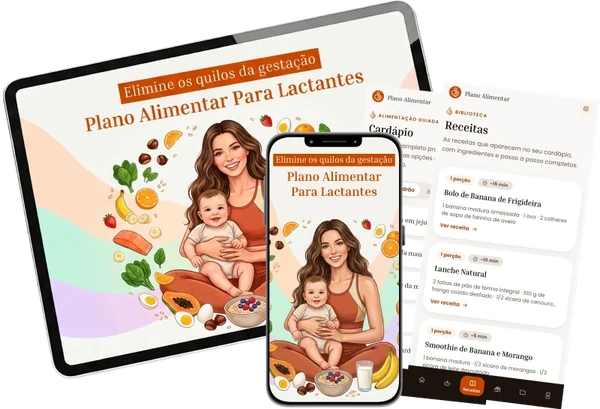
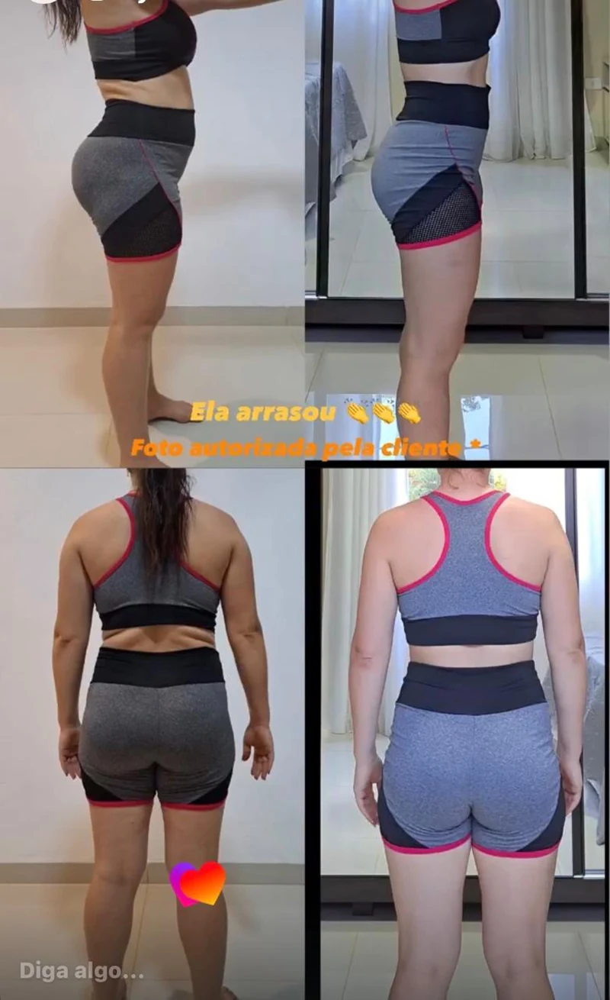
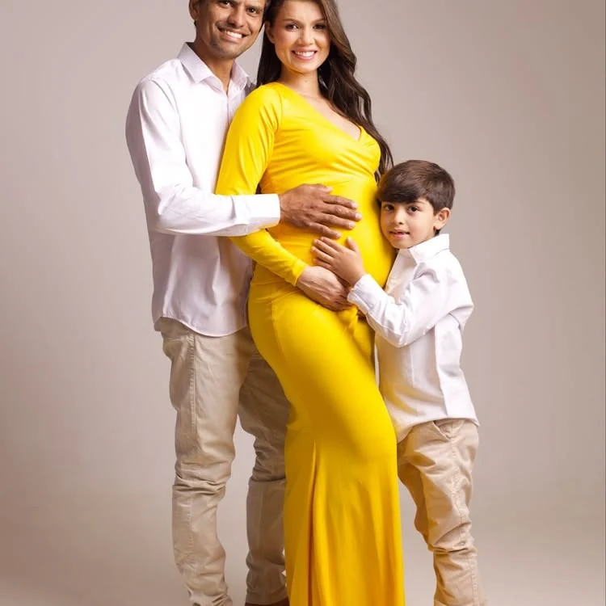

Elimine os quilos da gestação sem atrapalhar a amamentação
Sem cortar sua energia, sem dietas restritas e sem precisar de tempo que você não tem. Um cardápio feito por nutricionista especializada em lactantes.

Diagnóstico Grátis · Apenas 2 minutos
Qual é a sua idade?
Isso ajuda a calibrar seu metabolismo corretamente
Como você descreveria seu corpo hoje?
Selecione a opção que mais te descreve
O que você quer realmente mudar agora?
Escolha a opção que mais se adapta a você
Como você descreveria seu corpo hoje?
Seja honesta, isso personaliza sua solução
Em que partes do corpo você sente mais dificuldade?
Pode selecionar mais de uma opção
Há quanto tempo você está amamentando?
Isso personaliza o seu cardápio
Quanto acima do seu peso ideal você está hoje?
Seja honesta, isso personaliza sua solução
Veja as transformações de quem já usou o Plano Alimentar
👋
Para personalizar seu cardápio, como podemos te chamar?
Usaremos seu nome para deixar sua avaliação 100% personalizada. Zero spam.
🔒 Seus dados são privados. Zero spam.
Mamãe, como você está se sentindo no pós-parto?
Selecione o que mais se aplica a você
O que mais tem travado seus resultados?
Escolha a opção mais próxima da sua realidade
Por que você não consegue emagrecer na amamentação com dietas normais
Cortar calorias de forma brusca faz o corpo entender que está em risco. Isso ativa o cortisol, o hormônio do estresse, que retém gordura e pode reduzir a produção de leite exatamente quando seu bebê mais precisa dele.
É por isso que dieta genérica não funciona pra quem amamenta.
Por que algumas mães emagrecem fácil enquanto você luta para perder qualquer quilo?

Dieta restritiva no pós-parto retém líquido e acumula inflamação. A causa costuma ser cortisol elevado, sono ruim e uma alimentação desajustada pra essa fase. O resultado é o peso travado mesmo quando você sente que está "fazendo tudo certo".
Quanto tempo você tem para preparar suas refeições?
Seu cardápio será adaptado à sua rotina
Seu bebê tem APLV (Alergia à Proteína do Leite de Vaca)?
Temos uma versão especial para APLV
Mamãe, qual é o seu peso atual?
Seja honesta para um resultado preciso
Mamãe, qual é a sua altura?
Usamos isso para calcular seu IMC
Mamãe, qual é o peso com que você se sentiria bem?
Qual é o seu peso dos sonhos?
Mamãe, tem alguma ocasião especial que está te motivando?
Fixar uma data clara aumenta muito a motivação
Em quanto tempo você quer atingir seu objetivo?
Isso vai calcular sua projeção personalizada
🎯 Com base no seu diagnóstico...
Prevemos que você pesará 60 kg até --!
🎊 Boa notícia! Sua meta é alcançável
O que as mamães estão dizendo
Conversas reais entre a nutricionista e pacientes
🏆 Por que o Plano Alimentar funciona para mães lactantes:
- ✅ Alimentos que aumentam a produção de leite
- ✅ Refeições prontas em menos de 30 minutos
- ✅ Progresso constante sem passar fome
- ✅ Energia de volta para curtir seu bebê
Gerando seu Cardápio Personalizado...
Com base no seu perfil...
você pode secar entre
--
nas próximas semanas com o Plano Alimentar
📊 Índice de Massa Corporal (IMC)
👤 Seu Perfil Nutricional
🔥 Sua Taxa de Queima de Gordura
Lenta mas o Plano Alimentar vai corrigir isso 🔥
📅 Previsão personalizada para você
Com base em perfis semelhantes ao seu:
--
Mamãe, seu Plano Alimentar Para Lactantes está pronto!
Escolha o acesso que faz mais sentido para você:
Super Oferta + Bônus
O caminho mais rápido para emagrecer sem parar de amamentar
- ✓ Plano Alimentar Para Lactantes
- ✓ Guia de Saladas Saciantes em 10 MinutosR$97
- ✓ Guia Perdendo Medidas em 20 Passos Sem Dieta RadicalR$197
- ✓ Consultoria Construindo Metas Que Cabem na Sua RotinaR$247
- ✓ Consultoria Silenciando a Fome EmocionalR$237
- ✓ Consultoria Quebrando o Ciclo da AutossabotagemR$297
De R$1.075
R$19,90
🔒 Pagamento único · Acesso vitalício · Atualizações inclusas
Pague uma vez e tenha acesso para sempre
- Plano Alimentar Para Lactantes ✅
- Acesso por 7 dias ⚠️
- Sem suporte, sem bônus, sem acompanhamento ❌
R$10,90
Garantia de 90 dias na Super Oferta. Risco ZERO. Se você não gostar do Cardápio, basta pedir o seu dinheiro de volta.
Mais de 20 mil mães estão secando de forma saudável e segura com o Plano Alimentar!
Resumindo...
Pode ser a última vez que você acessa esta página, então sugiro que faça sua inscrição e tenha acesso imediato.
A proposta é simples e clara: você vai aprender na prática como seguir um cardápio especial que ajuda mães lactantes a emagrecerem de forma saudável e segura, enquanto mantêm uma produção de leite adequada e cuidam do seu bebê.
Você não precisa:
- Fazer dietas restritivas
- Gastar muito dinheiro com alimentos caros
- Abrir mão dos alimentos que você ama
Acho justo você ver por dentro e se não gostar, devolvo o seu investimento. Tudo que você precisa fazer agora é clicar no botão abaixo para ter acesso a TUDO que você viu.
Ákila Samara
Sou nutricionista desde 2016 e, durante quase toda a minha vida adulta, sempre tive um biotipo magro. Achava que comer sem me preocupar seria minha realidade para sempre. Então a maternidade mudou tudo.
Engravidei com 69 kg e cheguei ao fim da gestação com 83 kg. Depois do parto vieram as noites mal dormidas, a ansiedade e o cansaço, e eu buscava conforto na comida. Sem perceber, entrei num ciclo de compulsão alimentar que me manteve cerca de 8 kg acima do meu peso por oito meses.
O mais difícil não era o número da balança, era não me reconhecer no espelho. Até que decidi mudar, não só o corpo, mas a forma como eu lidava com minhas emoções. Reorganizei minha rotina e minha alimentação, e eliminei 10 kg em apenas 3 meses.
Hoje, quando acompanho outras mães, entendo exatamente o que elas sentem, porque eu vivi isso. Se você está nesse ciclo agora, saiba que não precisa continuar presa nele. Eu consegui, e você também pode conseguir.
CRN/9 29522

Eu vivi essa transformação e agora é a sua vez! Aproveite agora, você não vai encontrar essa oferta depois.